Déformateur de voix — mode d'emploi de l'extension Chrome
Version 0.5.0 de l'extension · 4 novembre 2026 · English version ↓
L'extension change ta voix en direct dans les sites ouverts dans Chrome : appels en ligne (Meet, Discord sur le web, Teams…), jeux du navigateur, enregistrements. Tout se règle dans le panneau latéral de Chrome. Ta voix est transformée sur ton ordinateur : rien ne part sur Internet (confidentialité).
L'extension sur le Chrome Web Store
Ce qu'il te faut
- Un casque ou des écouteurs, obligatoire. Avec des haut-parleurs, ta voix ressort et revient dans le micro : ça siffle, et les gens de l'appel t'entendent en écho.
- Chrome sur un ordinateur, et un micro.
- Pour Discord installé, OBS ou un jeu installé : le câble virtuel gratuit VB-CABLE (plus bas).
- Pour Game Mélodie : Windows. Sa banque d'instruments (gm.dls) est déjà sur ton PC.
Ouvrir le panneau
- Clique sur l'icône du Déformateur dans la barre de Chrome. Tu ne la vois pas ? Clique sur la pièce de puzzle 🧩, puis sur l'épingle à côté de « Déformateur de voix ». Le panneau s'ouvre sur le côté.
- Casque prêt ? s'affiche à chaque ouverture. Mets ton casque, puis clique ✓ Mon casque est mis. Le micro ne s'ouvre qu'après ce clic.
- La toute première fois, allume Le son, en bas. Chrome ouvre un onglet « Autoriser le micro pour le Déformateur » : clique 🎙 Autoriser le micro, puis « Autoriser ». L'onglet se ferme tout seul et le panneau s'allume. Les fois suivantes, le son s'allume tout seul.
En haut du panneau, la pastille dit dans quels sites ta voix est transformée, et quels appareils sont choisis. Un clic dessus ouvre tes appareils. Le bouton Aide explique tout, au même endroit.
Les sites ouverts dans Chrome reçoivent ta voix transformée tout seuls, dès qu'ils demandent le micro : rien à régler sur le site. Fermer le panneau remet ta voix normale partout et arrête les sons et la musique.
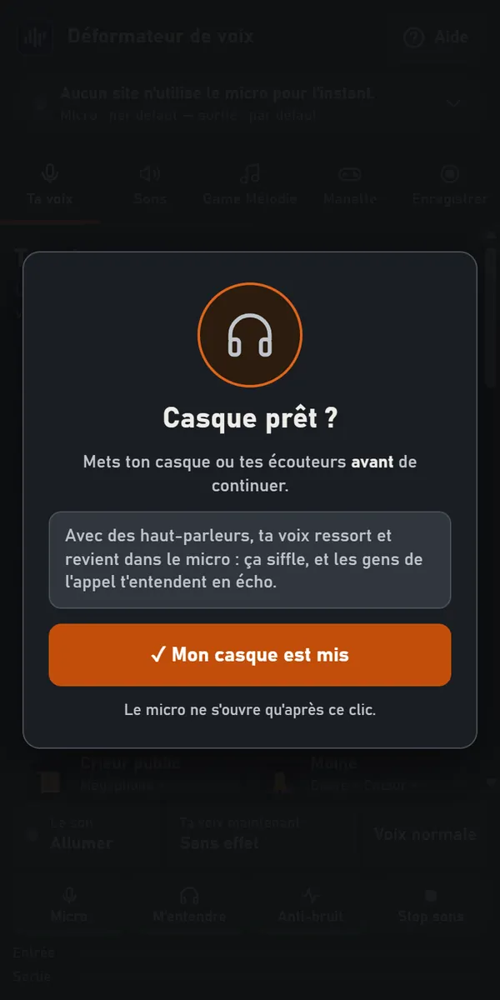
La barre du bas
Elle reste en bas du panneau, quel que soit l'onglet ouvert.
- Le son : t'entendre dans le panneau, dans la sortie choisie. Il s'allume tout seul à l'ouverture ; si tu le coupes, il reste coupé la fois suivante.
- Ta voix maintenant : le personnage ou le mélange d'effets en cours. Un clic ramène à l'onglet « Ta voix ».
- Voix normale : ta voix sans aucun effet.
- Micro : plus personne ne t'entend ; les sons et la musique passent toujours. Fermer le panneau rouvre le micro.
- M'entendre : éteint, tu n'entends plus ta voix dans ton casque, seulement les sons. Ta voix part toujours dans les appels, le câble et l'enregistrement.
- Anti-bruit : l'anti-bruit de Chrome, qui nettoie ton micro (ventilateur, clavier) avant les effets, ici et sur les sites.
- Stop sons : arrête tous les sons en cours, dans tes appels et dans ton casque. Ta voix et la musique de Game Mélodie continuent. Il passe en orange dans l'onglet Sons.
- Les jauges Entrée et Sortie montrent ce qu'entend et ce que rend le panneau quand le son est allumé. Entrée en rouge : ton micro t'entend, mais il est coupé.
Ta voix : personnages et effets
Personnages : 41 voix prêtes, du monstre au robot, de la fée au géant, et des voix humaines d'homme et de femme. Un clic met le personnage ; rappuie dessus pour retrouver ta voix.
- Chercher : tape une partie du nom, les accents ne comptent pas (« fee » trouve Fée).
- Favoris : l'étoile ★ d'un personnage le met dans tes favoris ; le bouton Favoris n'affiche plus qu'eux.
Effets à cumuler : 28 effets pour faire ton propre mélange (écho, robot, radio, téléphone, cathédrale, vocoder…). Un clic allume, un autre éteint. Survole un effet : il dit ce qu'il fait. Ton mélange s'écrit en haut ; Tout éteindre les coupe tous.
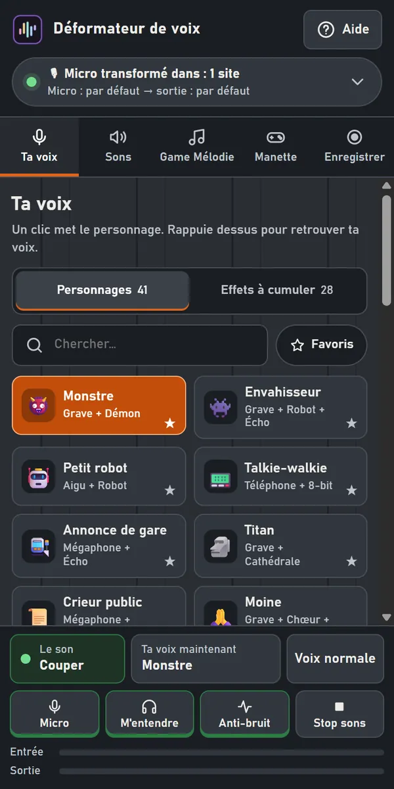
Sous les effets, la légende des couleurs donne leur famille : voix, hauteur, machine, radio, mouvement, lieu…
Voix normale, dans la barre du bas, enlève tout d'un coup.
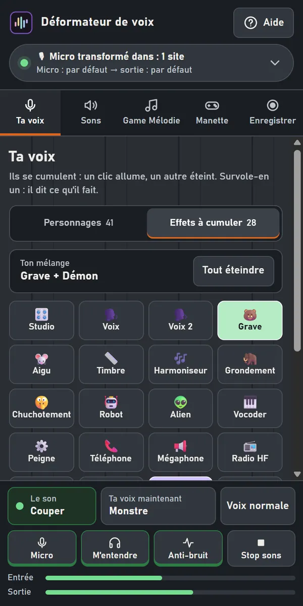
Tes appareils
Un clic sur la pastille, en haut, ouvre Appareils :
- Ton micro : celui dans lequel tu parles, ici et sur les sites. « Par défaut » laisse le site choisir. La petite jauge bouge quand tu parles.
- Où va ta voix : ton casque, pour t'entendre et essayer les personnages, ou CABLE Input pour Discord installé, OBS ou un jeu (VB-CABLE).
- Ton retour : il n'apparaît que si la sortie est un câble. Le câble reçoit tout ; ici, tu choisis le casque où tu t'entends.
Dessous : Ma voix dans le casque (éteint, tu n'entends plus que les sons), l'Anti-bruit de Chrome, et les volumes Voix (jusqu'à 150 %) et Sons (jusqu'à 120 %), l'un par rapport à l'autre, dans les appels, ton casque et les enregistrements.
Les noms des appareils s'affichent après la première autorisation du micro.
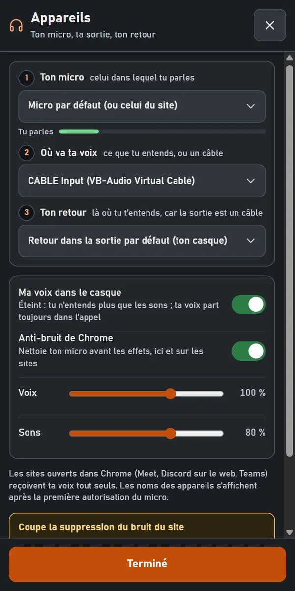
Coupe la suppression de bruit du site. Sinon elle efface tes sons, ta musique et tes effets, et on t'entend avec ta voix normale. Discord : « Suppression du bruit » sur « Aucune » · Teams : « Désactivée » · Meet : Paramètres → Audio.
Discord installé, OBS, un jeu : VB-CABLE
Les sites ouverts dans Chrome n'en ont pas besoin. Pour un logiciel installé sur ton PC, il faut un câble virtuel : VB-CABLE, gratuit, de VB-Audio. L'extension ne peut pas l'installer pour toi : sa licence interdit de le livrer avec un autre logiciel.
- Télécharge-le sur le site de VB-Audio, décompresse le dossier, lance VBCABLE_Setup_x64 (clic droit → Exécuter en tant qu'administrateur), puis redémarre le PC.
- Dans le panneau : Appareils → Où va ta voix → CABLE Input, puis allume le son en bas. Choisis ton casque dans Ton retour.
- Dans Discord, OBS ou le jeu : choisis CABLE Output comme micro, et coupe sa suppression de bruit (Discord : « Aucune »).
Les sons
Un clic joue le son : il part dans l'appel, mêlé à ta voix, et dans ton casque si le son est allumé. Recliqué pendant qu'il joue, il repart du début, sans se doubler.
- Bruitages (30), Bruits réels (44) et tes Favoris ; les thèmes (Réactions, Ville et maison, Médiéval…) trient la liste, et la recherche trouve un son par son nom.
- Survole un bruit réel : son auteur et sa licence s'affichent.
- Volume, en haut de l'onglet : le volume des sons.
- Stop sons, en orange dans la barre du bas, arrête ceux qui jouent. Il reste à l'écran même quand la liste descend.
- 📂 Ajouter mes sons : tes propres fichiers (WAV, MP3, OGG…), gardés dans l'extension, au même volume que les autres (60 secondes au plus par son). Ils vont dans Mes sons et se mettent aussi sur une touche de la manette ou du Stream Deck volant. 🗑 Retirer un son les enlève.
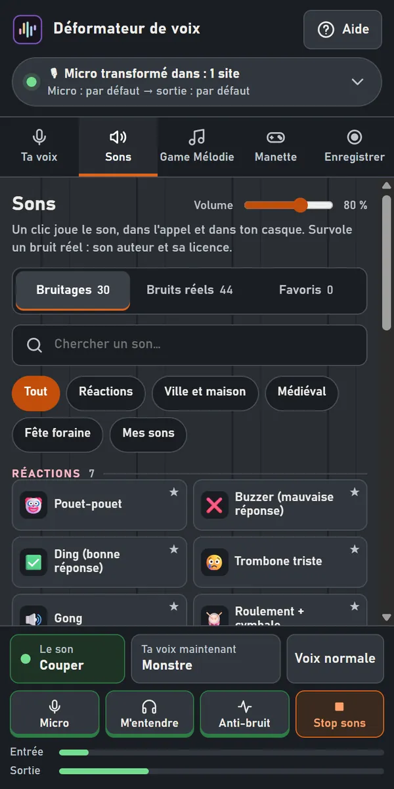
Game Mélodie
Ta manette devient un instrument, avec les vrais instruments de Windows : 20 thèmes (épique, metal, jazz, synthwave…). La musique sort dans ton casque et part dans tes appels, baissée quand tu parles.
Une seule fois : la banque d'instruments de Windows. Elle est déjà sur ton PC, rien n'est téléchargé. Clique 🎻 Choisir la banque, colle ce chemin dans « Nom du fichier », puis « Ouvrir » :
C:\Windows\System32\drivers\gm.dls
Ensuite : choisis un thème, puis ▶ Jouer. Chaque thème se prépare la première fois (quelques secondes, le metal jusqu'à une minute), puis il est gardé. 💤 Pause quand la manette ne joue plus met la musique en pause 12 s après le dernier bouton ; elle repart au suivant.
Plus tu joues vite, plus la musique s'emballe. Dans un jeu ouvert dans Chrome, la manette joue le jeu ET la musique.
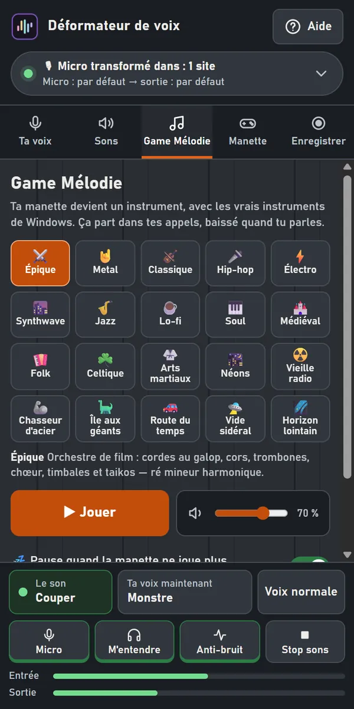
Quels boutons font quoi ? › ouvre ce tableau :
| A B X Y | les notes de l'accord (deux ensemble : deux notes) |
| Croix, stick gauche | monter, descendre dans la gamme |
| Gardé enfoncé | la note dure, jusqu'à 3 s (A B X Y et la croix) |
| LT tenue + A B X Y | un accord |
| LB RB | l'accord du thème |
| L3 | un roulement (en metal : une descente de toms) |
| R3 | un coup |
| LT RT | grosse caisse, caisse claire (en metal, gardées : double pédale, roulement) |
| L3 + R3 tenus | lancer, arrêter |
Quand Game Mélodie joue, les boutons de la manette sont à la musique.
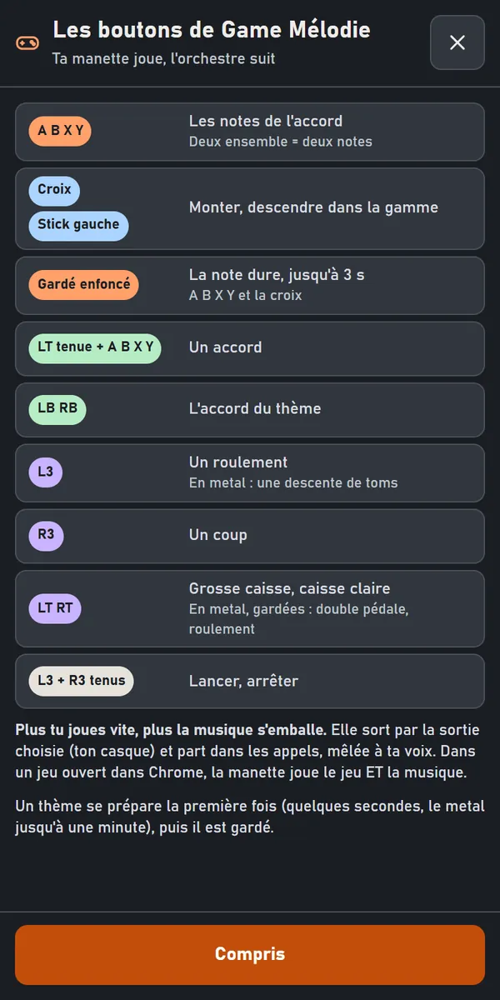
La manette et ses touches
Dans l'onglet Manette, chaque touche de ta manette joue un son, met un personnage, allume un effet ou fait une action. Allume Manette active ; le panneau doit rester ouvert.
- Changer une touche : un clic dessus, puis choisis ce qu'elle fait (Son, Personnage, Effet, Action) et lequel, et OK.
- Manette : si tu en as plusieurs, choisis celle qui joue.
- Profil : les douze touches ET la voix qu'on y avait, un profil par jeu ou par stream. ＋ en crée un (copie de celui-ci), ✏ le renomme, 🗑 le supprime (deux clics).
- Par défaut : LB RB personnage d'avant, d'après · Start voix normale · Back couper, rouvrir le micro. Back + Start tenus 2 s : couper, rallumer la manette.
- ⌨ Raccourcis clavier : Chrome ouvre sa page des raccourcis ; choisis une touche du clavier pour chaque bouton. En « Global », ils marchent même quand Chrome n'est pas devant (Chrome n'y accepte que Ctrl + Maj + un chiffre).
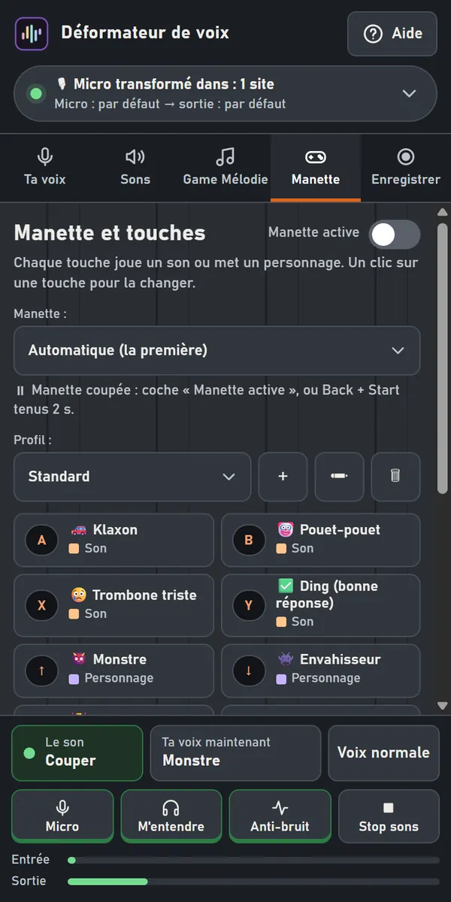
Changer une touche : la même touche sert à la manette et au Stream Deck volant.
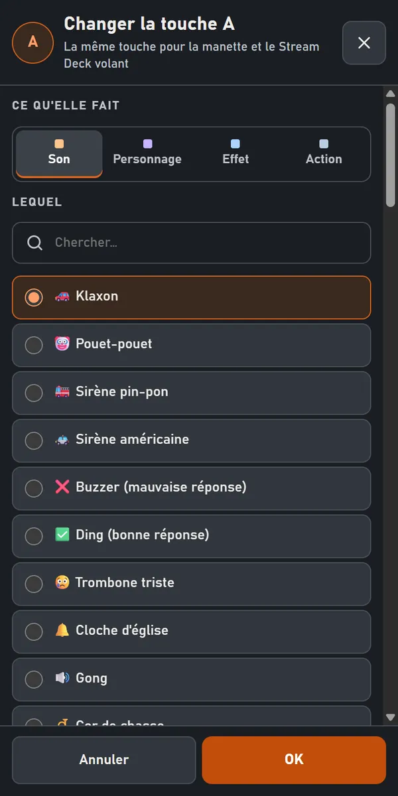
Le Stream Deck volant
🎛 Stream Deck volant, dans l'onglet Manette : les douze boutons en touches à cliquer, dans une petite fenêtre. Un clic : la touche agit. Clic droit : la changer. Ce sont les MÊMES réglages que la manette.
📌 Toujours devant la garde au-dessus de tout, même de ton jeu (s'il n'est pas en plein écran exclusif). C'est alors elle qui lit la manette, et elle te dit si elle la reçoit : Windows ne donne pas toujours la manette à Chrome quand le jeu est devant. L'outil pour Windows, lui, la lit toujours.
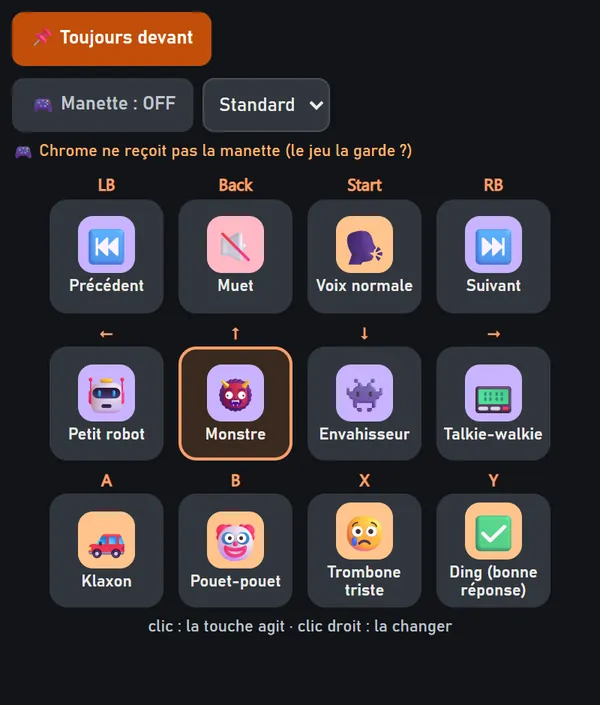
Enregistrer ta voix
Pour une note vocale, un montage ou une vidéo : clique ⏺ Enregistrer, parle, puis arrête. Le fichier garde ta voix déformée et tes sons.
Les trois derniers restent dans le panneau, sur cet ordinateur : réécoute-les, ⬇ Télécharger le fichier, ou 🗑 Supprimer (deux clics). Au-delà de trois, le plus ancien s'efface tout seul.
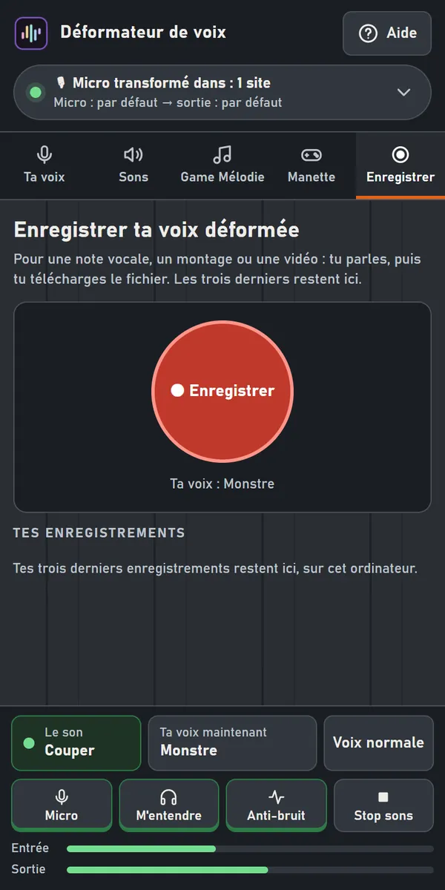
Si ça ne marche pas
- Ça siffle, on t'entend en écho : tu es sur des haut-parleurs. Mets un casque.
- Les autres t'entendent avec ta voix normale, ou sans tes sons : coupe la suppression de bruit du site (Discord : « Aucune »). Vérifie aussi que le panneau est ouvert : le fermer remet ta voix normale.
- Tu n'entends rien dans le panneau : allume Le son, en bas, et regarde M'entendre et ta sortie dans Appareils.
- Discord installé ou OBS ne reçoit rien : il faut VB-CABLE, avec « CABLE Input » comme sortie dans le panneau et « CABLE Output » comme micro dans le logiciel.
- La manette ne répond pas quand le jeu est devant : ouvre le Stream Deck volant en « 📌 Toujours devant ». Si Windows ne donne toujours pas la manette à Chrome, l'outil pour Windows, lui, la lit toujours.
- Les noms des appareils ne s'affichent pas : autorise d'abord le micro (allume « Le son » une fois).
Pour streamer avec OBS, les décors animés, le chat Twitch et la voix IA : la version complète pour Windows, gratuite, sur itch.io. Une question : les commentaires de cette page itch.io.
Voice Deformer — Chrome extension user guide
Extension version 0.5.0 · November 4, 2026 · Version française ↑
The extension changes your voice live on websites open in Chrome: online calls (Meet, Discord on the web, Teams…), browser games, recordings. Everything is set up in Chrome's side panel. Your voice is changed on your computer: nothing goes to the Internet (privacy).
The extension on the Chrome Web Store
What you need
- Headphones or earbuds, required. With speakers, your voice comes back out and into the mic: it squeals, and people in the call hear you echo.
- Chrome on a computer, and a microphone.
- For the Discord app, OBS or an installed game: the free VB-CABLE virtual cable (below).
- For Game Mélodie: Windows. Its instrument bank (gm.dls) is already on your PC.
Opening the panel
- Click the Déformateur icon in Chrome's toolbar. Can't see it? Click the puzzle piece 🧩, then the pin next to “Déformateur de voix”. The panel opens on the side.
- Headphones on? shows every time the panel opens. Put your headphones on, then click ✓ My headphones are on. The mic only opens after this click.
- The very first time, turn on Sound at the bottom. Chrome opens a tab “Allow the microphone for the Déformateur”: click 🎙 Allow the mic, then “Allow”. The tab closes by itself and the panel turns on. After that, the sound turns on by itself.
At the top of the panel, the status pill tells you which sites get your changed voice, and which devices are chosen. Clicking it opens your devices. The Help button explains everything in one place.
Sites open in Chrome get your changed voice by themselves, as soon as they ask for the mic: nothing to set up on the site. Closing the panel brings your normal voice back everywhere and stops sounds and music.
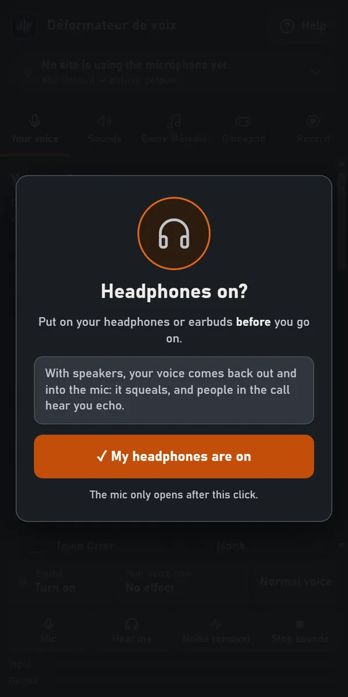
The bottom bar
It stays at the bottom of the panel, whatever tab is open.
- Sound: hear yourself in the panel, in the chosen output. It turns on by itself when the panel opens; if you turn it off, it stays off next time.
- Your voice now: the character or effect mix in use. A click takes you to the “Your voice” tab.
- Normal voice: your voice with no effect at all.
- Mic: nobody hears you any more; sounds and music still go through. Closing the panel reopens the mic.
- Hear me: when off, you no longer hear your voice in your headphones, only the sounds. Your voice still goes into calls, the cable and recordings.
- Noise removal: Chrome's noise removal, which cleans your mic (fan, keyboard) before the effects, here and on websites.
- Stop sounds: stops every sound playing, in your calls and in your headphones. Your voice and the Game Mélodie music keep going. It turns orange in the Sounds tab.
- The Input and Output meters show what the panel hears and plays when the sound is on. A red input: your mic hears you, but it is muted.
Your voice: characters and effects
Characters: 41 ready-made voices, from monster to robot, fairy to giant, plus human male and female voices. One click puts the character on; click it again to get your own voice back.
- Search: type part of the name; accents don't matter.
- Favorites: a character's star ★ adds it to your favorites; the Favorites button shows only them.
Effects to stack: 28 effects to make your own mix (echo, robot, radio, telephone, cathedral, vocoder…). One click turns an effect on, another turns it off. Hover over one: it says what it does. Your mix is written at the top; Turn all off turns them all off.
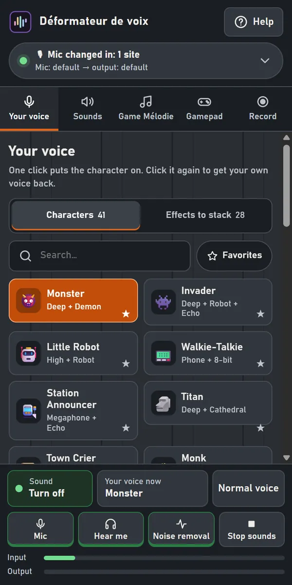
Below the effects, the color key gives their family: voice, pitch, machine, radio, movement, place…
Normal voice, in the bottom bar, removes everything at once.
Your devices
Clicking the status pill at the top opens Devices:
- Your mic: the one you speak into, here and on websites. “Default” lets the site choose. The small meter moves when you talk.
- Where your voice goes: your headphones, to hear yourself and try the characters, or CABLE Input for the Discord app, OBS or a game (VB-CABLE).
- Your monitor: only shows when the output is a cable. The cable gets everything; here you choose the headphones where you hear yourself.
Below: My voice in my headphones (off: you only hear the sounds), Chrome noise removal, and the Voice (up to 150%) and Sounds (up to 120%) volumes, relative to each other, in calls, your headphones and recordings.
Device names show up after the mic has been allowed once.
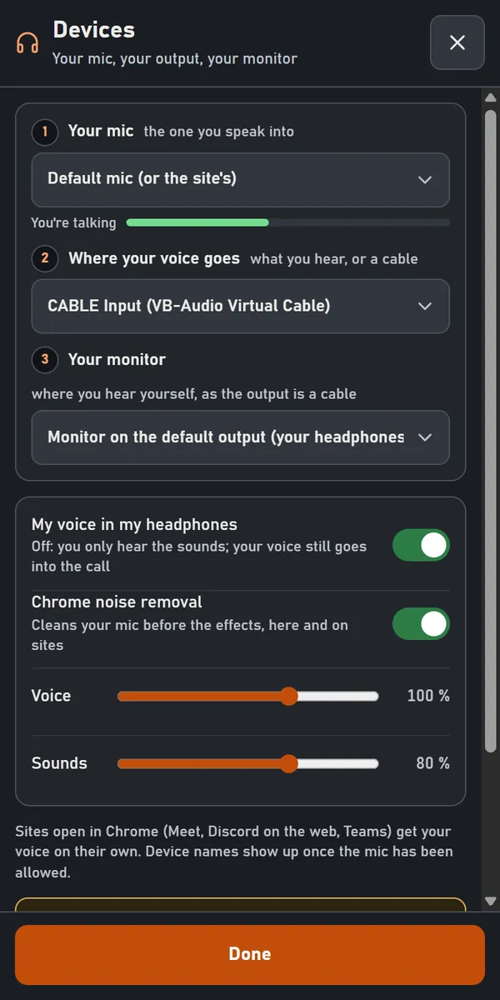
Turn off the site's noise suppression. Otherwise it erases your sounds, music and effects, and people hear your normal voice. Discord: “Noise Suppression” set to “None” · Teams: “Off” · Meet: Settings → Audio.
The Discord app, OBS, a game: VB-CABLE
Sites open in Chrome don't need it. For a program installed on your PC, you need a virtual cable: VB-CABLE, free, by VB-Audio. The extension can't install it for you: its license forbids shipping it with other software.
- Download it from the VB-Audio website, unzip the folder, run VBCABLE_Setup_x64 (right-click → Run as administrator), then restart the PC.
- In the panel: Devices → Where your voice goes → CABLE Input, then turn the sound on at the bottom. Choose your headphones in Your monitor.
- In Discord, OBS or the game: choose CABLE Output as the microphone, and turn off its noise suppression (Discord: “None”).
Sounds
One click plays the sound: it goes into the call, mixed with your voice, and into your headphones if the sound is on. Clicked again while playing, it starts over instead of doubling.
- Sound effects (30), Real sounds (44) and your Favorites; the themes (Reactions, City and home, Medieval…) sort the list, and search finds a sound by name.
- Hover over a real sound: its author and license show up.
- Volume, at the top of the tab: the sounds' volume.
- Stop sounds, orange in the bottom bar, stops the ones playing. It stays on screen even when the list scrolls down.
- 📂 Add my sounds: your own files (WAV, MP3, OGG…), kept in the extension at the same volume as the others (60 seconds at most per sound). They go into My sounds and can also go on a gamepad key or the Floating Stream Deck. 🗑 Remove a sound takes them out.
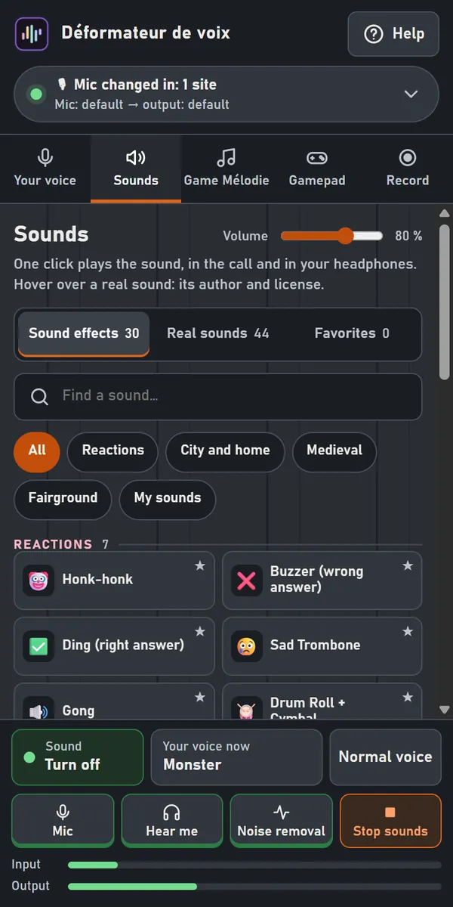
Game Mélodie
Your gamepad becomes an instrument, with the real Windows instruments: 20 themes (epic, metal, jazz, synthwave…). The music plays in your headphones and goes into your calls, lowered when you talk.
Only once: the Windows instrument bank. It is already on your PC; nothing is downloaded. Click 🎻 Choose the bank, paste this path into “File name”, then “Open”:
C:\Windows\System32\drivers\gm.dls
Then pick a theme and click ▶ Play. Each theme is prepared the first time (a few seconds, metal up to a minute), then it is kept. 💤 Pause when the gamepad stops playing pauses the music 12 s after the last button; it starts again with the next one.
The faster you play, the wilder the music gets. In a game open in Chrome, the gamepad plays the game AND the music.
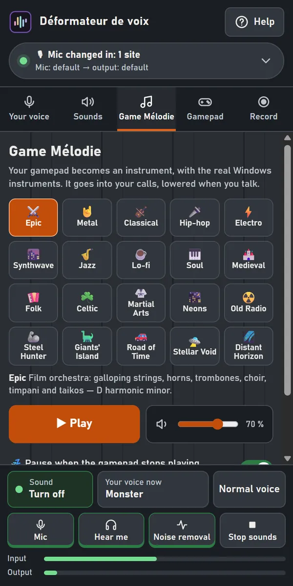
Which buttons do what? › opens this table:
| A B X Y | the notes of the chord (two together: two notes) |
| D-pad, left stick | up, down the scale |
| Held down | the note lasts, up to 3 s (A B X Y and the D-pad) |
| LT held + A B X Y | a chord |
| LB RB | the theme's chord |
| L3 | a roll (metal: a tom fill) |
| R3 | a hit |
| LT RT | bass drum, snare (metal, held: double kick, snare roll) |
| L3 + R3 held | start, stop |
While Game Mélodie plays, the gamepad buttons belong to the music.
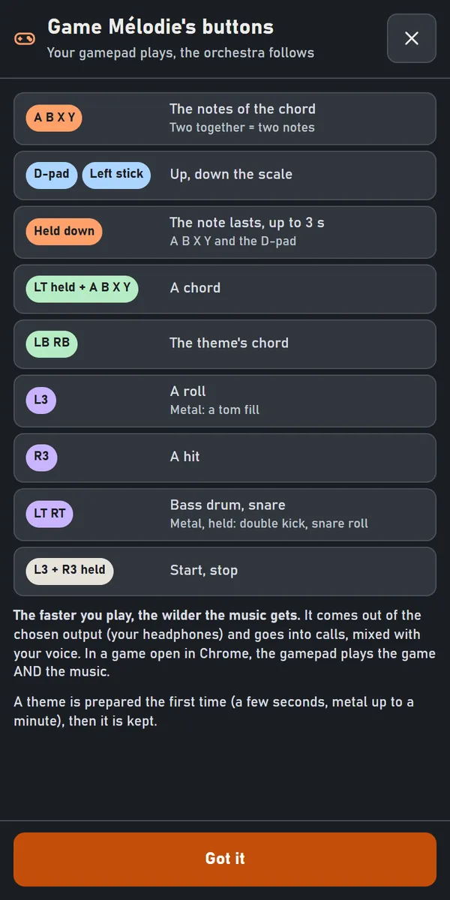
The gamepad and its keys
In the Gamepad tab, each key on your gamepad plays a sound, puts on a character, turns an effect on or does an action. Turn on Gamepad on; the panel must stay open.
- Changing a key: click it, choose what it does (Sound, Character, Effect, Action) and which one, then OK.
- Gamepad: if you have several, choose the one that plays.
- Profile: the twelve keys AND the voice that went with them, one profile per game or per stream. ＋ creates one (a copy of this one), ✏ renames it, 🗑 deletes it (two clicks).
- By default: LB RB previous, next character · Start normal voice · Back mute, unmute the mic. Back + Start held 2 s: turn the gamepad off, on.
- ⌨ Keyboard shortcuts: Chrome opens its shortcuts page; pick a keyboard key for each button. Set to “Global”, they work even when Chrome isn't in front (Chrome only accepts Ctrl + Shift + a digit there).
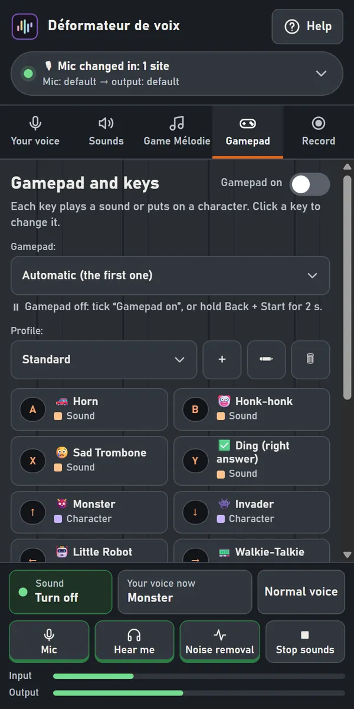
Changing a key: the same key is used by the gamepad and the Floating Stream Deck.
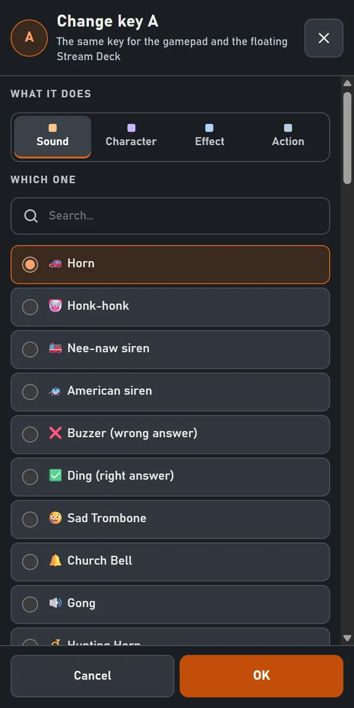
The Floating Stream Deck
🎛 Floating Stream Deck, in the Gamepad tab: the twelve buttons as keys to click, in a small window. Click: the key acts. Right-click: change it. These are the SAME settings as the gamepad.
📌 Always on top keeps it above everything, even your game (unless it runs in exclusive fullscreen). It then reads the gamepad itself, and tells you whether it gets it: Windows doesn't always give the gamepad to Chrome when the game is in front. The Windows app always reads it.
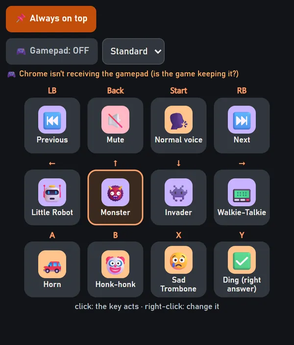
Recording your voice
For a voice note, an edit or a video: click ⏺ Record, talk, then stop. The file keeps your changed voice and your sounds.
The last three stay in the panel, on this computer: listen again, ⬇ Download the file, or 🗑 Delete (two clicks). Beyond three, the oldest is erased automatically.
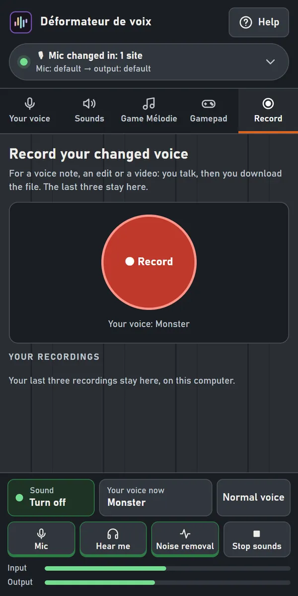
If something doesn't work
- It squeals, people hear an echo: you're on speakers. Put on headphones.
- Others hear your normal voice, or not your sounds: turn off the site's noise suppression (Discord: “None”). Also check the panel is open: closing it brings your normal voice back.
- You hear nothing in the panel: turn on Sound at the bottom, and check Hear me and your output in Devices.
- The Discord app or OBS gets nothing: you need VB-CABLE, with “CABLE Input” as the output in the panel and “CABLE Output” as the microphone in the program.
- The gamepad doesn't respond when the game is in front: open the Floating Stream Deck with “📌 Always on top”. If Windows still doesn't give the gamepad to Chrome, the Windows app always reads it.
- Device names don't show: allow the mic first (turn on “Sound” once).
To stream with OBS, animated scene designs, Twitch chat and the AI voice: the full version for Windows, free, on itch.io. Questions: the comments on that itch.io page.